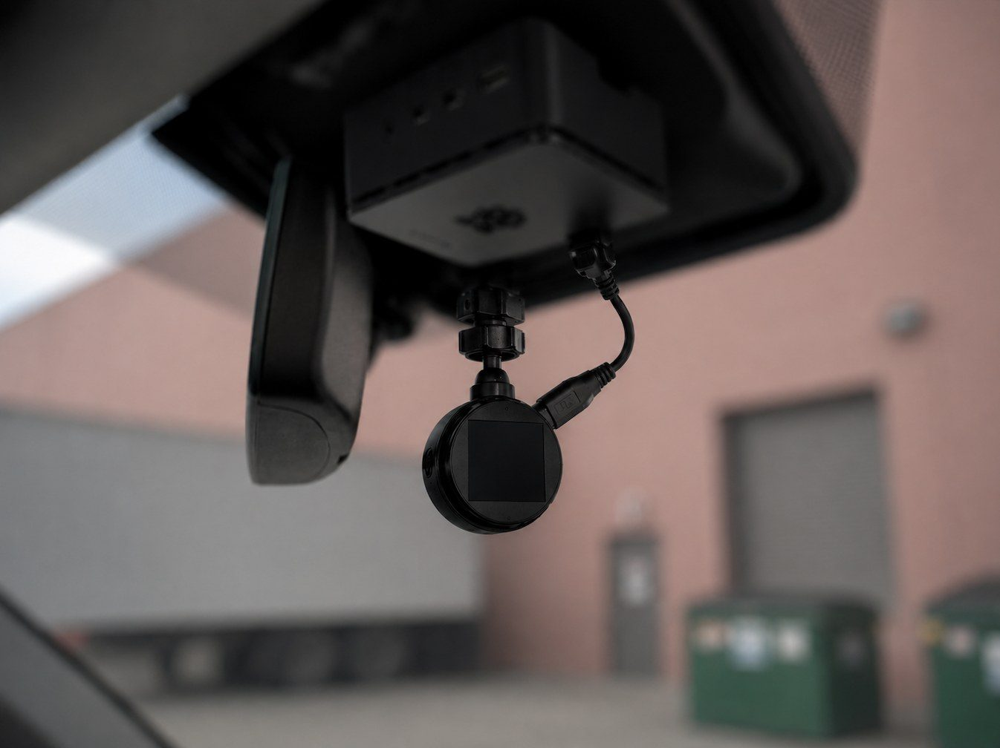

P.A.R.K.R. (Parking Automation & Recognition Kit Radar)
 parkr/own-01.jpg
parkr/own-01.jpgA dashcam-based computer vision system that watches for parking enforcement vehicles from a parked car and sends a reminder to top up before the session lapses.
| Compute | Raspberry Pi 4B, Camera v3 |
|---|---|
| Model | YOLOv8, trained in PyTorch |
| Annotation | LabelImg, hand-annotated across lighting and weather |
| Signal | Temporal flash pattern, not static shape |
| Logging | GPS-timestamped detections |
The problem
You lose track of a paid parking session while you are working, and you find out it expired when you find the ticket.
Running vision on a Pi
The system runs entirely on a Raspberry Pi 4B with a Camera v3. Running YOLOv8 inference on continuous video with no GPU means the frame rate has to stay high enough to catch a vehicle that is passing, which drives most of the engineering.
OpenCV preprocessing isolates flashing warning lights from ordinary traffic and reflections. The detection model was trained in PyTorch on hand-annotated datasets built with LabelImg from footage across varying lighting and weather. Identifying an enforcement vehicle is not a single-frame problem, since the distinguishing signal is a temporal flash pattern rather than a static shape.
Logging and alerting
A GPS module timestamps detections, creating location-based logs that track patrol patterns over time rather than only immediate observations. Alerts are deliberately advisory: they prompt a decision rather than taking action on your behalf.
Status
Detection, GPS logging, and alerting are operational. Automated payment through a parking provider API was planned but remains unimplemented; the system currently provides reminders only.
Build log
4 images
parkr/own-02.jpg parkr/03.jpg
parkr/03.jpg parkr/04.jpg
parkr/04.jpg parkr/05.png
parkr/05.pngContact
Open to co-op and new-grad roles in robotics, aerospace, and advanced manufacturing.